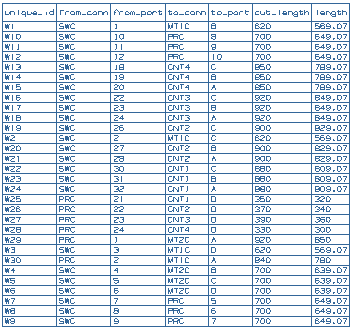

In this activity, you will annotate the formboard drawing by adding a cut sheet to it, along with pin listing tables and path length labels.

Launch the Annotate the formboard activity.
For additional information, see the following:
Use the Command Finder to search for :
Cut Sheet Annotation
Pin Listing
Path Length Annotation